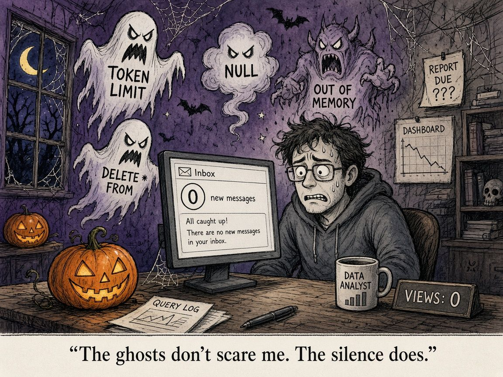

The Scariest Sound in Data Is Silence
Ask any engineer or analyst what scares them and you’ll get a list fit for Halloween. “Token limit exceeded.” “DELETE FROM” with no WHERE clause. “Out of memory” at 2 AM. A null where a primary key should be.
They’re frightening, but they have one redeeming quality: they’re loud. Something breaks, an alert fires, and you know where to look.
For me, the scariest thing is quieter. It’s silence.

“No news is good news”
There’s a saying in data teams that if the business is quiet, everything’s working. No tickets, no angry emails, no “why is this number wrong?” And often that’s true. A well-built pipeline should be boring.
But silence is ambiguous. It can mean everything is fine. It can also mean:
- Nobody is opening the dashboard any more.
- The report landed in an inbox and never made it into a decision.
- The numbers are wrong and nobody has noticed yet.
- Your work is running perfectly, and invisibly, and no one knows you built it.
The last one stings in a different way. Loud failures get attention. Quiet successes often get none.
Turning silence into signal
More recently, outside my day role, I’ve been spending more time on data science and AI engineering projects, and I’ve started treating silence as something to measure rather than something to enjoy.
- Check usage, not just uptime. A green job tells you the data arrived. View counts, query logs and last-opened dates tell you whether anyone cared.
- Ask one person what they did with it. Not “is it working?” but “what decision did this help with?” The answer, or the pause before it, tells you a lot.
- Close the loop yourself. When something ships or changes, send a two-line note: what changed, and why it matters. It isn’t self-promotion. It’s making the work findable.
- Retire what nobody uses. If a report has had no views in months, ask if it can go. Fewer, better-used outputs beat a graveyard of dashboards.
The accountant in me recognises this. In finance, a reconciliation nobody reviews is a control that only exists on paper. Data work is the same: an output nobody uses isn’t really delivering anything, however clean it is.
In my role, a quiet business usually means nothing broke overnight: the pipelines ran, the numbers landed, and you did your job well. Most data engineers love that kind of quiet. But I think the era of quiet competence is ending. Data engineers now need to be more vocal, a little political, and more commercial: able to explain what the work is worth, put it in front of the right people, and argue for it when priorities shift. Staying quiet used to be a sign you were doing well. Now it can mean the value goes unnoticed.
The takeaway
The loud monsters will always find you. It’s the quiet ones you have to go looking for. This Halloween, don’t just ask “is it broken?” Ask “is anyone listening?”